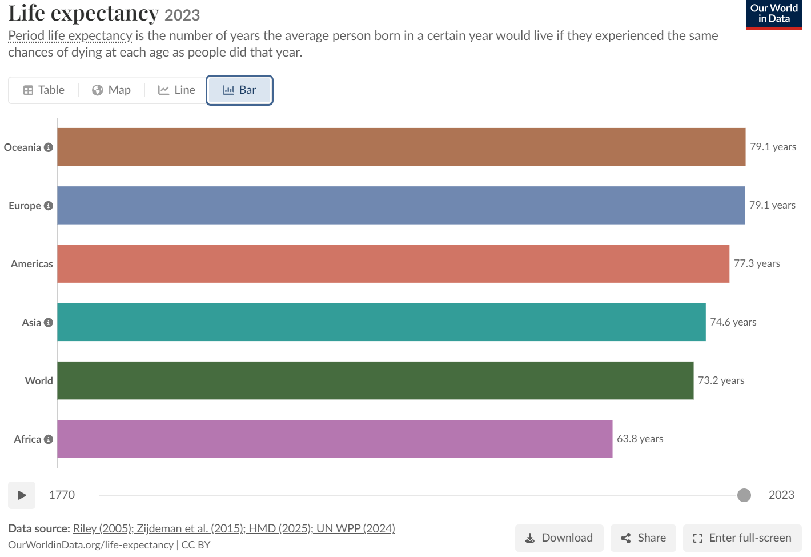

Visualization Critique & Redesign
STATS 401 Individual Project · Life expectancy, 1950–2023 · Our World in Data (Riley 2005; HMD 2025; UN WPP 2024, CC BY 4.0) · Ruisheng (Rosa) Sun
Part 1 · The Original Visualization & Critique
Source: Our World in Data — “Life expectancy”, shown in Bar mode for 2023 (the grapher also offers Line/Map/Table and a 1770–2023 time slider).
Data: period life expectancy at birth (years) for the World, five continents, and ~200 countries, compiled from Riley (2005), Zijdeman et al. (2015), the Human Mortality Database (2025) and UN World Population Prospects (2024).

Screenshot not found — please copyoriginal-chart.png into this folder, or view the original chart here.'"> Figure 1 · The original visualization: “Life expectancy, 2023” (Bar mode), Our World in Data.
Intended message: The primary message is the comparison of regional life expectancy in 2023. The interactive time slider provides an additional way to explore how these differences changed historically. Audience: general public and students. Tasks: compare regions, read the 2023 ranking, and (if they press play) watch the evolution.
Strengths
- Readable bars, direct value labels (Oceania 79.1 years, Africa 63.8 years), and descending order make the 2023 ranking visible at a glance.
- Distinct colors help separate regions, while the minimal design and clearly stated sources support readability and transparency.
- On the source site, hovering gives exact values and the 1770–2023 slider can play the evolution year by year.
Weaknesses
- Only regional averages are shown: Asia’s 74.6-year average hides substantial differences among countries, such as Japan and Afghanistan. Important within-region variation is therefore hidden.
- The default view is a single-year snapshot: historical trends require the time slider, and animation is less effective for precise comparisons between specific years because viewers must rely on memory. A static time-series view would make those comparisons easier.
- Scalability: the chart is optimized for a small set of regional comparisons. Comparing many countries can become difficult to interpret, especially when numerous lines and repeated colors appear. Ranking controls, search, and highlighting could make country-level exploration more manageable.
References for this part: Our World in Data grapher · full CSV download (CC BY 4.0).
Part 2 · My Redesign — From One-Year Bars to a Focusable Country Explorer (D3.js v7)
Same dataset, rebuilt for the country-level story: countries are represented as trajectories on a shared 1950–2023 axis, colored by continent, with ranking filters and focus interactions to manage overplotting; the legend is a row of continent chips — hovering one brightens that continent’s countries and fades everything else, clicking pins it. Hover any line to keep it crisp while the other ~200 fade to ghosts, with a tooltip showing its value at that year and its gain since 1950; a dashed World line is the reference. Top-10/20/50/All ranking and an instant search box replace the flat picker. Full trajectories replace the single-year snapshot.
Note: end labels appear when ≤25 countries are shown (otherwise they collide); use hover/search for any country. Continent colors are mapped in-page from ISO country codes (OWID CSVs carry no Continent column); unrecognized economies land in gray “Other”.
Data: ../data/life-expectancy.csv (full CSV linked above), loaded with d3.csv.
Part 3 · Report
Also available as report.md.
Original visualization and context
The original is a bar chart of life expectancy in 2023 for six entities: Oceania (79.1 yrs), Europe (79.1), the Americas (77.3), Asia (74.6), the World (73.2), and Africa (63.8). The grapher also offers a 1770–2023 time slider that animates the same bars year by year. Intended message: where the world’s regions stand on life expectancy today, and how the ranking evolved. Audience: the general public and students. Tasks: compare regions, read the 2023 ranking, and — only if the viewer presses play — watch the evolution.
Critique
Strengths. (1) Readable bars, direct value labels, and descending order make the 2023 ranking visible at a glance. (2) Distinct colors help separate regions, while the minimal design and clearly stated sources support readability and transparency. (3) On the source site, hovering reports exact values, and the time slider supports exploration of historical changes.
Weaknesses. (1) Only continental averages are shown. Each bar is a population-weighted mean: Asia’s 74.6 merges Japan (≈84) and Afghanistan (≈66), and Africa’s bar hides a 15-year spread between its countries. The most interesting stories in the data — country gaps, catch-up, outliers — are invisible. (2) A single-year snapshot discards time by default. Convergence, China’s rise, and shocks such as wars or COVID-19 exist in the data but appear only while playing the slider; comparing two specific years from an animation relies on memory — and per our course material, animation supports change detection, not accurate comparison across time points. (3) The chart is optimized for a small set of regional comparisons. The World average sits in the same list as the continents, and the only way in is a 200+ entry picker that adds entities one at a time — at which point the clean bar view collapses into line-chart overplotting with a repeating 20-color cycle.
Redesign rationale
I rebuilt the visualization in D3.js (v7) from the same CSV (loaded with d3.csv), keeping the bar chart’s honesty (zero-based axes, labeled values, distinct colors) while opening up the country and time dimensions.
Decision 1 — country-level lines colored by continent, with a live legend. Every country becomes a line on a shared 1950–2023 axis, colored by its continent; the legend is a row of continent chips whose hover brightens that continent’s countries and fades everything else, and whose click pins the filter. This fixes weakness 1: regional gaps (Nigeria vs. South Africa, Japan vs. Afghanistan) become visible without any picker, and color now encodes a meaningful grouping instead of recycling per-entity hues.
Decision 2 — trajectories replace the snapshot, with focus-and-fade and a quantitative tooltip. Hovering a country (via a fat invisible hit-stroke so thin lines are grabbable) keeps it crisp, fades the other ~200 lines to a ghost layer, and pops up its value at the hovered year plus its change since its first data year; a dashed World line serves as the reference. This fixes weakness 2: the “how did we get here” story is always on screen, exact values come to the pointer, and no animation or memory is required.
Decision 3 — ranked subsets plus search instead of the flat picker. A Top-10/20/50/All switch (ranked by latest value) sets a readable default, and an instant search box jumps to any country; end labels are drawn automatically when at most 25 lines are shown. This fixes weakness 3: overplotting is a choice the viewer makes, not the default, and no entity is more than a search away.
Original vs. redesign
The redesign keeps what the bar chart does well — honest scales, labeled values, distinct colors — while restoring the two dimensions the snapshot suppressed: the country level and full time. Any of the original’s questions (ranking, gaps) are still answerable, plus new ones the original could not support (a country’s whole trajectory, its gain since 1950, within-continent inequality). Trade-offs: the Top-N cutoff is a choice rather than a fact; with many lines displayed, reading still depends on focus mode; and the simplicity of six bars is intentionally traded away for depth.
References
- Our World in Data. Life expectancy — original visualization and dataset information.
- Our World in Data. Download the full life-expectancy dataset (CSV).
- Our World in Data. Grapher Chart API documentation.
The dataset page credits the Human Mortality Database, UN World Population Prospects, Zijdeman et al., and James C. Riley. Follow the attribution and license information on the source page.